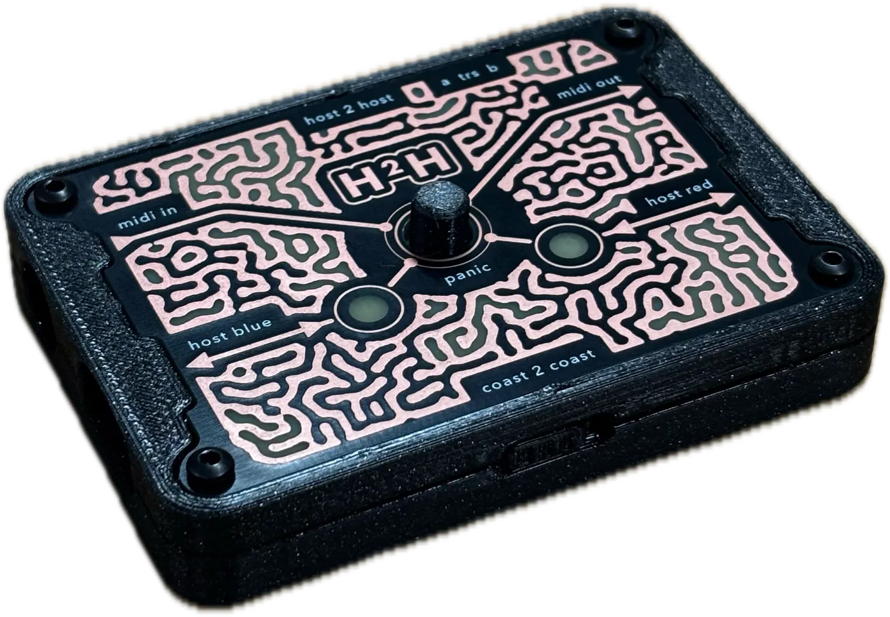
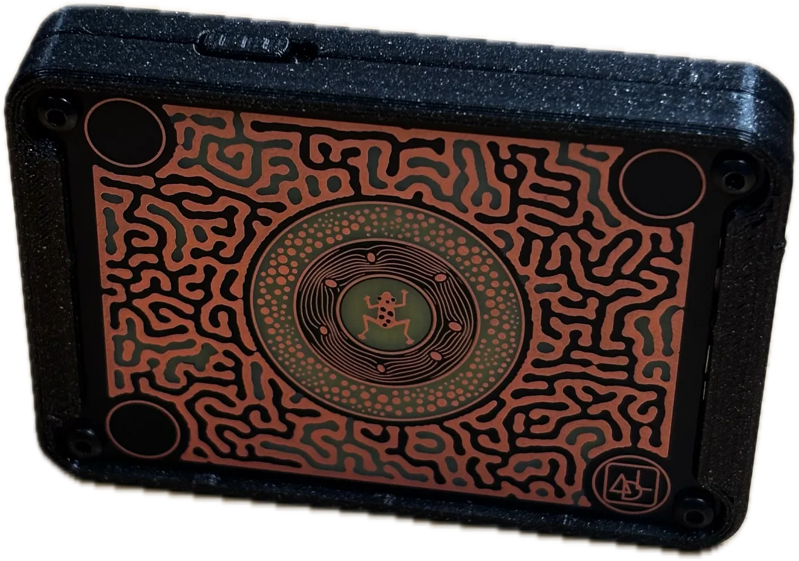

One MIDI rig, two computers. H2H joins two computers over USB and gives both of them a MIDI IN and a MIDI OUT.
Scroll to put it together
Two plates of bare copper, a printed frame in two halves, and one board with two Seeed XIAO RP2040s: one for each computer.
Plug in both sides.
host 2 host
Two computers, one rig
Plug one computer into each end. Each one sees a plain USB MIDI port, H2H Blue on the left and H2H Red on the right. There is no driver to install. What one computer sends, the other receives.
The jacks bring your hardware in. MIDI IN goes to both computers. MIDI OUT plays everything: both computers and MIDI IN.
routing
Play it
Pick where a note comes from, then play. The dots follow the firmware's routing, and the lights on the plate flash the way the real ones do.
midi in, host blue / midi out, host red
Two ends, four ports
Left end
USB-C for host blue, and MIDI IN on a 3.5 mm TRS jack.
Right end
USB-C for host red, and MIDI OUT on a 3.5 mm TRS jack.
Between them
Two Seeed XIAO RP2040 modules, one for each computer, joined by a link on the board.
2 cables / 1 cable
Two cables, or one
Two computers on one audio interface or mixer can hum through their shared ground. On 2 cables, each side runs from its own computer, and the two grounds stay apart.
On 1 cable, the two sides share one supply, so one USB port runs both. A phone charger is enough: MIDI IN then plays straight to MIDI OUT, with no computer at all.
a trs b
TRS type A or B
There are two ways to wire MIDI on a 3.5 mm jack, and gear does not agree on one. The switch next to MIDI OUT picks the type, also while H2H runs. The red light flashes white once for A and twice for B.
MIDI IN needs no switch: a diode bridge takes both types.
panic
Panic
A stuck note stops with one press. H2H sends a note off for every note it knows is still on, then sustain off, all sound off and all notes off, on all 16 channels. It sends them to both computers and to MIDI OUT.
The red light holds white while it works.
coast 2 coast
Made for the stage
lights
Read the lights
Each module has one light, under a window in the top plate. Press a row to see it.
The real one


Details
Size
70.2 × 49.4 × 11.7 mm.
Computers
Two, over USB-C. Each sees a class compliant USB MIDI port, H2H Blue or H2H Red. No driver.
MIDI
IN and OUT on 3.5 mm TRS jacks. IN takes type A and type B and goes through an optocoupler. OUT switches between A and B.
Inside
Two Seeed XIAO RP2040 modules, one for each computer, and a link between them on the board.
Case
Two plates of FR4 with black mask and bare copper, and a frame printed in two halves. Four M2 screws on each side hold it together.
Tested
Copper
The copper on both plates has only a thin organic coat. It darkens with use and handling, so no two units age the same way.
Edition
Twenty, numbered by hand on the bottom plate.
Get one
H2H is built by hand, in a small batch. To ask for one and for its price, open an issue on GitHub and say where it should go.
You need a GitHub account to open an issue. The issue is public, so do not put your address in it. Alejandro answers there and takes the rest to email.
The board is drawn in KiCad and the case in FreeCAD, both open source. The page uses three.js, GSAP and Lenis, and is set in Hanken Grotesk. This website was built with Claude Code.